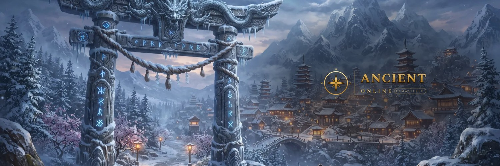

Independent game studio from Türkiye, building Ancient Online: Remastered, a cross-platform empire MMORPG on Unreal Engine 5.8.
Ancient Online: Remastered is a modern remake of the classic eastern-fantasy empire MMORPG. Players choose one of rival empires and fight for territory in open-world PvP, hunt in contested grounds and dungeons, push their gear through high-risk upgrades and lead guilds in castle sieges.
The game is being built on Unreal Engine 5.8 for Windows, Linux, macOS, Android and iOS and is localized into 30 languages. Power cannot be bought with real money: the in-game shop offers only cosmetics and convenience items, never combat power.
ancient.astent.games · astent.games · News · Careers · YouTube · LinkedIn · Discord · GitHub